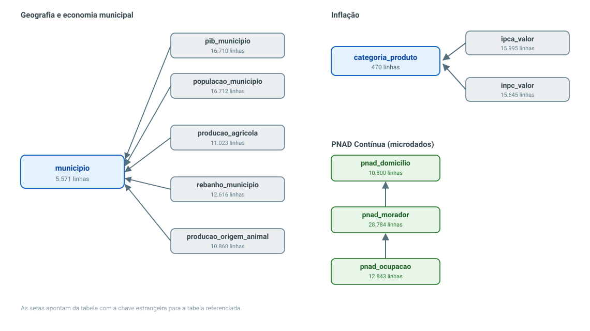

Banco de origem
O ponto de partida do pipeline é um banco relacional PostgreSQL 16 com dados reais do IBGE, rodando em Docker. Ele tem 12 tabelas e serve de origem para a ingestão no data lake.
Fonte dos dados
Todos os dados são públicos e foram coletados das APIs oficiais do IBGE:
| Pesquisa | Tabelas no banco | Origem |
|---|---|---|
| Municípios e divisão territorial | municipio |
API de Localidades |
| IPCA e INPC | ipca_valor, inpc_valor, categoria_produto |
SIDRA (agregados 7060 e 7063) |
| População estimada | populacao_municipio |
SIDRA (agregado 6579) |
| PIB dos municípios | pib_municipio |
SIDRA (agregado 5938) |
| Produção agrícola, pecuária e origem animal | producao_agricola, rebanho_municipio, producao_origem_animal |
SIDRA (agregados 5457, 3939 e 74) |
| PNAD Contínua (microdados) | pnad_domicilio, pnad_morador, pnad_ocupacao |
PNAD Contínua |
Portais: IBGE · API de serviços · SIDRA.
Diagrama do modelo
O diagrama abaixo mostra as 12 tabelas e as chaves estrangeiras entre elas.

O diagrama é gerado a partir do banco real: o script
origem/scripts/gerar_dbml.py lê as tabelas e as chaves direto do PostgreSQL e
escreve o arquivo origem/modelo_origem.dbml. Esse arquivo pode ser colado em
dbdiagram.io para visualizar e exportar o modelo.
cd origem
python scripts/gerar_dbml.py
Validação do banco
As consultas de verificação estão em origem/consultas/validacao.sql.
Consulta 1 — linhas por tabela
| Tabela | Linhas |
|---|---|
| pnad_morador | 28.784 |
| populacao_municipio | 16.712 |
| pib_municipio | 16.710 |
| ipca_valor | 15.995 |
| inpc_valor | 15.645 |
| pnad_ocupacao | 12.843 |
| rebanho_municipio | 12.616 |
| producao_agricola | 11.023 |
| producao_origem_animal | 10.860 |
| pnad_domicilio | 10.800 |
| municipio | 5.571 |
| categoria_produto | 470 |
O enunciado pede pelo menos 10 mil linhas nas tabelas principais.
10 das 12 tabelas (83%) atendem esse mínimo. As duas menores são tabelas de
cadastro: municipio (os 5.570 municípios do país) e categoria_produto (os
itens do IPCA/INPC).
Consulta 2 — distribuição de datas (últimos 3 anos)
| Pesquisa | Período coberto |
|---|---|
| IPCA e INPC | 11/2023 a 09/2026 (mensal) |
| PIB dos municípios | 2021 a 2023 |
| População estimada | 2024 a 2026 |
| Produção agrícola, rebanhos e origem animal | 2023 a 2025 |
| PNAD Contínua | 2º tri/2024 a 2º tri/2026 |
Cada pesquisa do IBGE tem uma defasagem diferente de divulgação (o PIB municipal, por exemplo, sai com cerca de dois anos de atraso), mas todas as séries ficam dentro da janela dos últimos três anos.
Normalização
O banco foi modelado na 3ª forma normal:
municipioé a tabela de referência geográfica. As demais tabelas de dados municipais (PIB, população, produção agrícola, rebanhos e produção de origem animal) apontam para ela pormunicipio_id, em vez de repetir nome da cidade, UF e região em cada linha.categoria_produtoguarda os itens do IPCA e do INPC uma única vez;ipca_valoreinpc_valorreferenciamcategoria_id.- A PNAD foi normalizada em três níveis encadeados:
pnad_domicilio→pnad_morador→pnad_ocupacao, cada um com sua chave e ligados por chave estrangeira, evitando repetir os dados do domicílio em cada morador.
Com isso, cada informação fica guardada em um só lugar, e as chaves estrangeiras garantem a integridade entre as tabelas.
Como subir o banco
Pré-requisito: Docker e Docker Compose instalados.
cd origem
cp .env.example .env
docker compose up -d
Na primeira vez que sobe, o container restaura automaticamente o dump
origem/sql/02_banco_completo.sql.gz, já com todos os dados. Para recriar o
banco do zero:
docker compose down -v
docker compose up -d